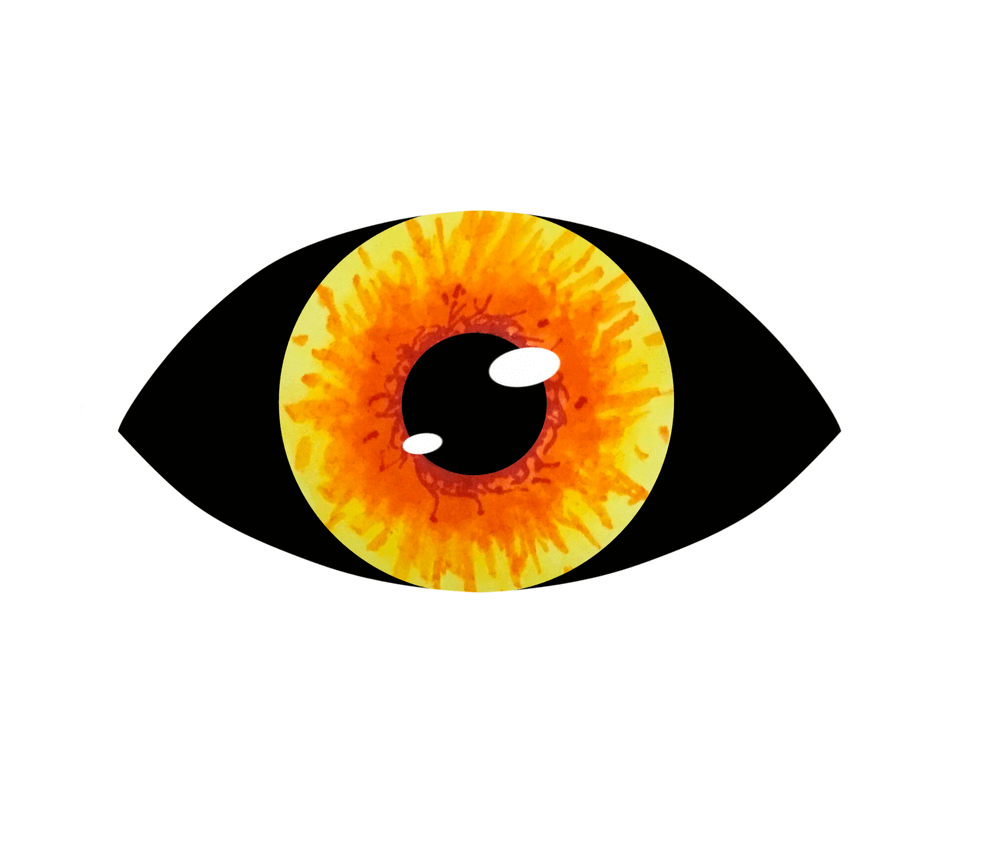

Eye
Eye
During middle school and early high school I would often use highlighters and a couple of random sharpies I found to draw stuff on my papers when I was done with the assignments. I really liked the color combination of my red sharpie and my orange and yellow highlighters. One day I noticed that an explosion thing I had doodled looked kind of like an eye, so I took a picture and drew over it in one of my art apps.